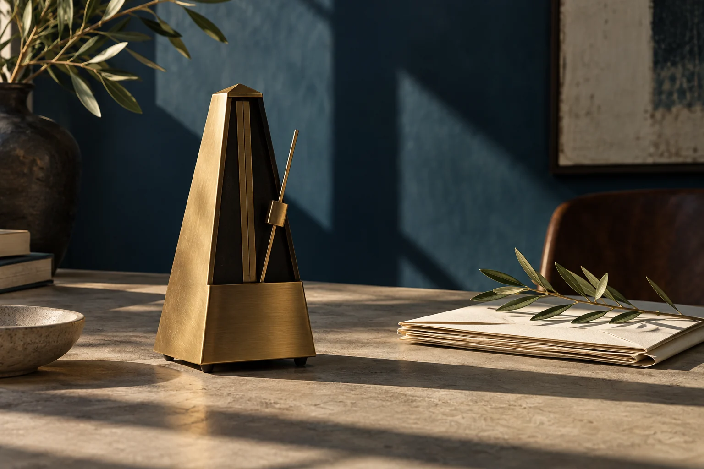

Understand
Your starting point.
We listen to the people who know the process. We identify what works, where delays build up and their impact.

Consulting
We turn the intention to improve into a clear, shared and achievable path for your team.
The process before the tool
An approval on hold, a document being reworked or data transferred by hand can have very different causes. That is why we start by understanding what is happening and what it means for your project.
Our proposal grows from that reality: what to preserve, what to adjust and which outcome to observe. Decisions and management remain in your hands.
How we work
We start from your reality and agree each step. The scope fits your project; the direction remains yours.
Explore our consultingUnderstand
We listen to the people who know the process. We identify what works, where delays build up and their impact.
Define
We agree what should improve: commission capacity, response time or progress to a billable milestone. We measure the starting point before building.
Design
We build and test an automation, integration or application for the chosen process. We start with a bounded scope before extending it across the team.
Support
We review what happens, adjust and document. Your team embeds the improvement and keeps control of decisions and delivery.
Where it takes shape
We start with a specific process and the result you want. Technology comes in when it makes sense.
Requests, reminders and recurring documents in one connected workflow. We design automation to reduce waits and move towards deliveries and billable milestones, with the checks your team needs.

When a spreadsheet or generic tool no longer fits, we build an application for that process: project records, requests or milestone tracking. Visible status and owners make the next decision clear.

We connect the tools you already use so project data, documents and status move without copying and pasting at each step. We validate each platform’s capabilities before implementation.

What we build with you
Steps, participants, dependencies and decision points.
The scope of improvement and measures to assess it.
Automation, integration or custom app, tested with your team within the agreed scope.
Documentation and sessions to sustain progress independently.
Your team retains management and decision-making. Our role is to analyse the process, design improvements and support adoption with agreed standards, documentation and reviews.
The focus is on architecture practices and project managers looking to expand capacity or improve delivery control. We examine one process: outstanding documents, manual follow-up or data repeated across tools.
We first review what you already use. An improvement may be an agreed standard, a clear step or connecting two platforms. We only suggest another tool when there is a clear reason and a viable fit.
With a short conversation about your situation and the outcome you want. If there is a fit, we define scope, participants and a proposal before starting work.
Our support is organised through agreed sessions and reviews, usually remotely. The proposal defines each stage and its frequency. Your team remains responsible for daily operations.
It depends on the process, tools and scope. After the initial conversation we propose phases, deliverables, a schedule and a fee. Any ongoing support is agreed separately.
We agree a baseline and a business outcome: project capacity, response time or time to a billable milestone. We also measure waits and repetitive tasks to understand the change. Automation does not guarantee more sales: we validate its contribution with data from your process.
The standards, workflows and materials defined in scope, together with agreed handover sessions. The aim is for you to maintain and develop the improvement independently.
We start by listening
In 15 minutes, we identify one task and the outcome you want. No presentation or full company walkthrough needed.
Let’s explore your project